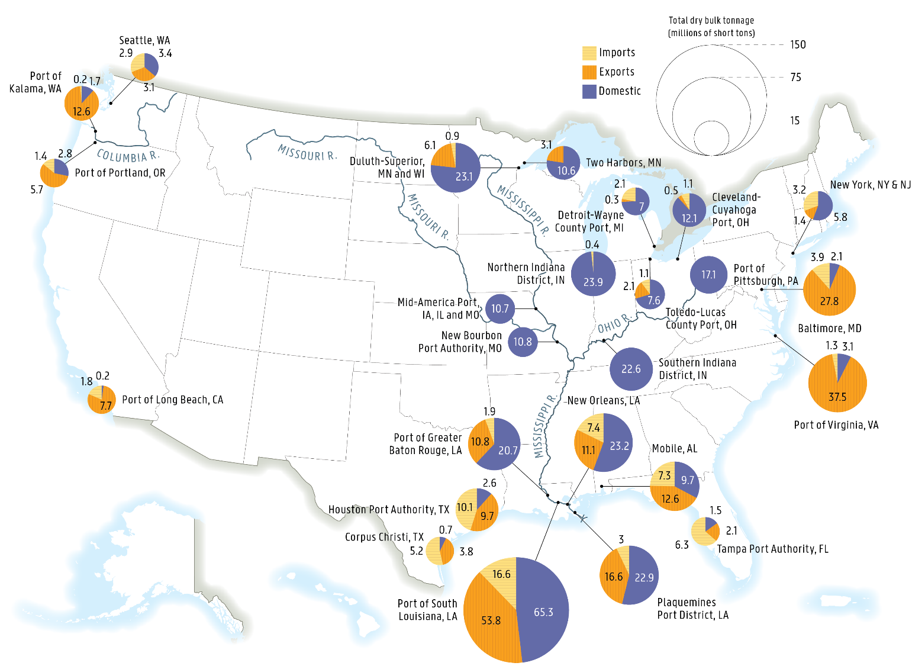
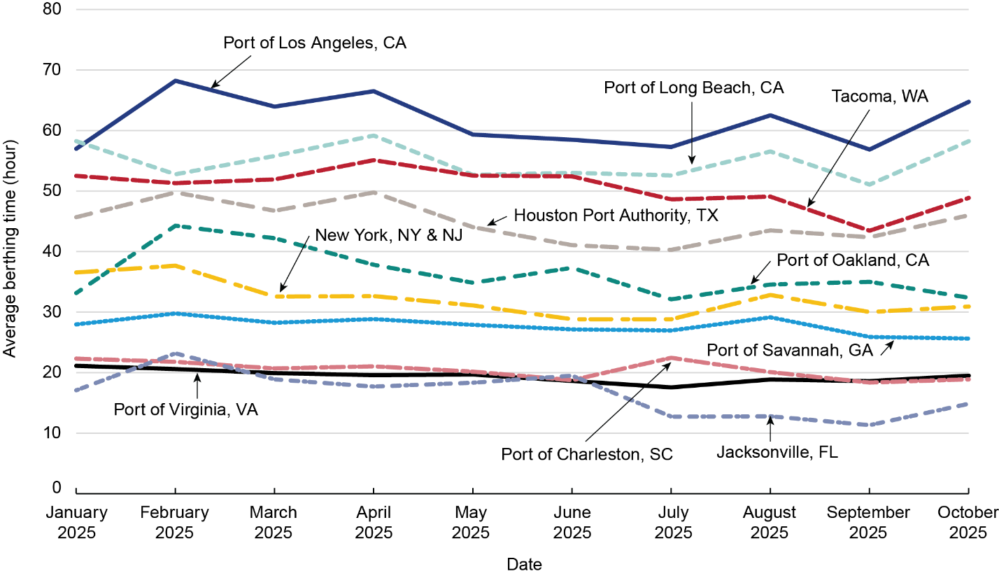
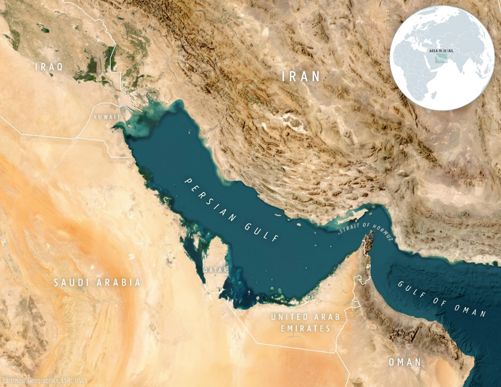
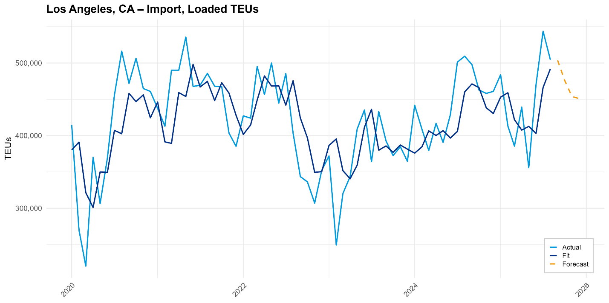
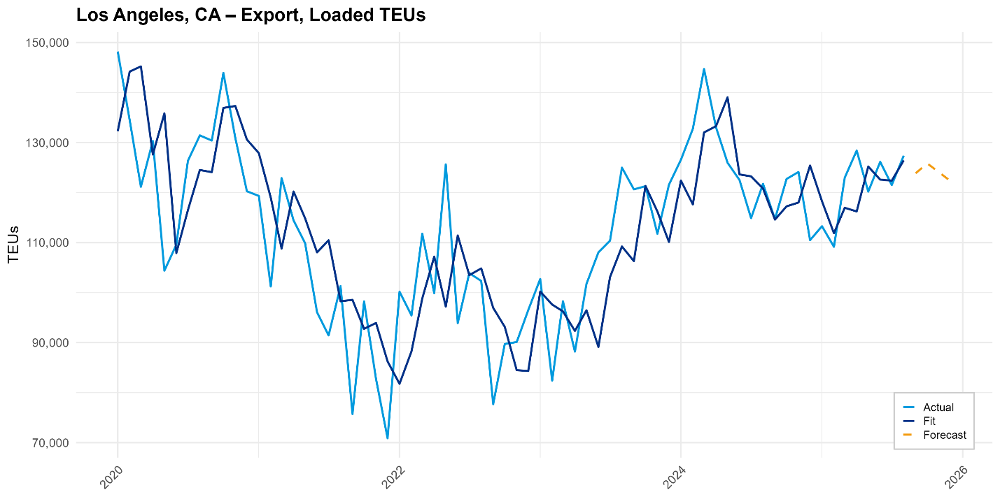
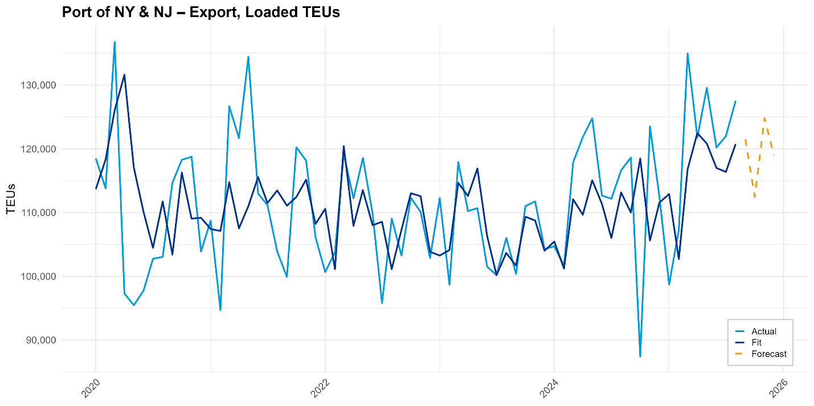
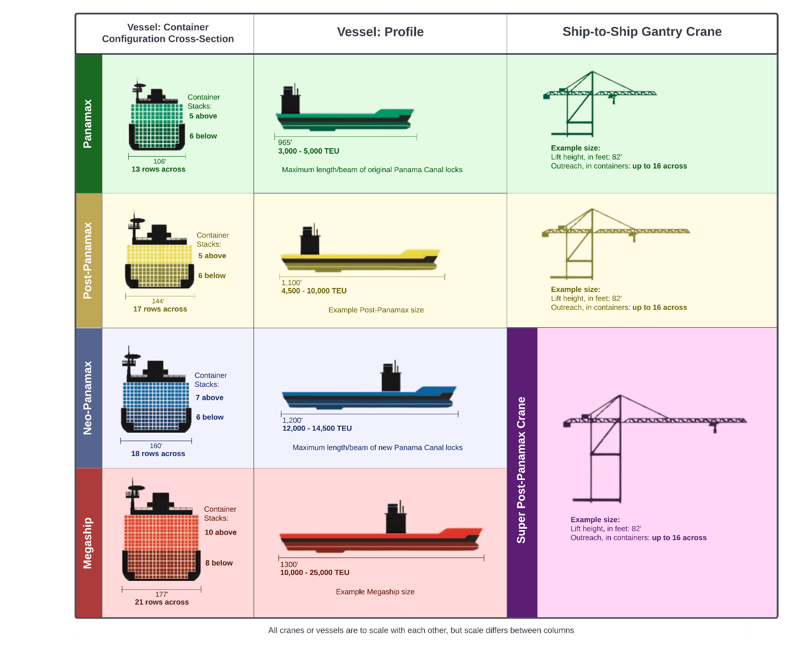

image1.png

image2.png
A group of ships in the water Description automatically generated

image3.png

image4.png
A large ship in the water Description automatically generated

image5.png
A ship in the water Description automatically generated

image6.png

image7.png

image8.png

image9.png
Picture 1, Picture

image10.png
A blue circle with a black background with ships in the water Description automatically generated

image11.jpeg
A picture containing text, nature AI-generated content may be incorrect.

image12.png
A graph showing a line of a graph AI-generated content may be incorrect.

image13.png
A graph of blue lines AI-generated content may be incorrect.

image14.png
A graph showing a line of blue and white lines AI-generated content may be incorrect.

image15.png
A graph showing a line of blue lines AI-generated content may be incorrect.

image16.png
A graph showing a line graph AI-generated content may be incorrect.

image17.png
A graph showing a line of blue lines AI-generated content may be incorrect.

image18.png
A screenshot of a computer Description automatically generated